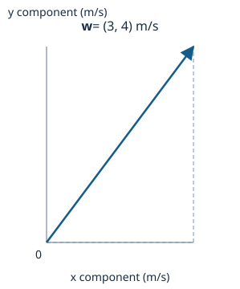
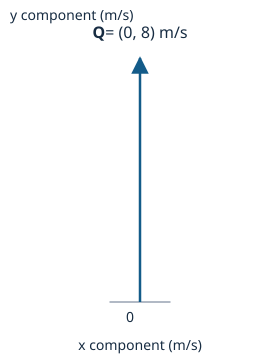
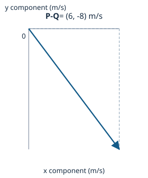
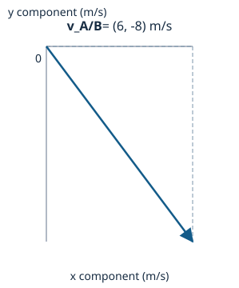

Review preview — scientific and teaching approval remains pending.
Motion in two dimensions: vector representation and subtraction; relative velocity in a plane · CORE1A
Vector representation and subtraction
Intrinsic concept difficulty: MEDIUM
Before any number is subtracted or added, name the frame. Declare which direction along each axis counts as positive -- here, east is positive x and north is positive y -- because a signed component only means something once that choice is fixed.
A vector w with components (3, 4) m/s is read directly off those axes: 3 m/s east and 4 m/s north. The vector and its magnitude are two different descriptions of the same physical quantity. The magnitude (speed) is obtained by treating the two perpendicular components as the legs of a right triangle: speed = sqrt(3^2 + 4^2) = sqrt(25) = 5 m/s. Squaring removes the sign from each component, so the magnitude is always taken nonnegative -- but the original signed pair (3, 4) is still required afterwards to say which way the vector points. Stating '5 m/s' alone never answers a direction question.

Subtraction of two vectors is defined as addition of the reversed second vector: P - Q = P + (-Q). Reversing Q keeps its length exactly the same and flips its direction end for end; reversal also flips the sign of every one of its signed components.
Take P = (6, 0) m/s and Q = (0, 8) m/s in the common east/north frame. Reversing Q gives -Q = (0, -8) m/s. As a free vector, -Q may be translated to the head of P without being rotated. Adding tail-to-head, the resultant is P + (-Q) = (6 + 0, 0 + (-8)) = (6, -8) m/s. This graphical route must agree with the direct component-by-component subtraction, (P_x - Q_x, P_y - Q_y) = (6 - 0, 0 - 8) = (6, -8) m/s -- and it does. Applying the right-triangle bridge, the magnitude is sqrt(6^2 + 8^2) = sqrt(100) = 10 m/s.
Vector subtraction is defined as addition of the reversed second vector.
- P: the first vector in the declared common frame.
- Q: the second vector, expressed in the same frame.
- -Q: Q reversed -- identical magnitude, opposite direction.
Applies when:
- P and Q are expressed along the same declared axes.
- Free vectors may be translated (not rotated) for the tail-to-head construction.


Relative velocity in a plane
Intrinsic concept difficulty: HARD
'A relative to B' is built from same-time positions, not memorised as a bare formula. If r_A and r_B are the positions of A and B at the same instant in one common frame, then following the path origin -> B -> A gives r_A = r_B + r_A/B, so r_A/B = r_A - r_B: the position of A measured from B.
Writing this relation at two instants t1 and t2 and subtracting gives Delta r_A/B = Delta r_A - Delta r_B. Dividing every term by the same nonzero time interval turns each side into an average velocity; for the constant velocities used in this teaching case, v_A/B = v_A - v_B. Both displacement changes must be divided by the same shared interval -- comparing changes measured over different intervals would not describe how one simultaneous separation evolves.
Apply this to A moving at (6, 0) m/s and B moving at (0, 8) m/s in a common east/north frame: v_A/B = (6, 0) - (0, 8) = (6, -8) m/s. By the right-triangle bridge, the magnitude is sqrt(6^2 + 8^2) = sqrt(100) = 10 m/s. The eastward component is positive and the northward component is negative, so the vector points southeast.
For constant velocities, the relative velocity of A with respect to B is the vector difference of their common-frame velocities.
- v_A: velocity of A in the common frame.
- v_B: velocity of B in the same frame, same instant.
- v_A/B: velocity of A relative to B, i.e. A as measured by an observer moving with B.
Applies when:
- Use the same observation times and a common time interval.
- Express all vectors along parallel, nonrotating Cartesian axes.
- Use a classical (non-relativistic) kinematic model.

Swapping the observer reverses the vector: v_B/A = -(v_A/B). Since A relative to B is (6, -8) m/s, B relative to A is (-6, 8) m/s -- every component changes sign. The magnitude is unchanged, because the right-triangle bridge only uses squared components, and squaring erases a sign flip: sqrt((-6)^2 + 8^2) = sqrt(100) = 10 m/s, matching the original 10 m/s. Adding the two relative vectors together gives exactly zero, which is a standing check for this reversal relation on any pair of velocities.